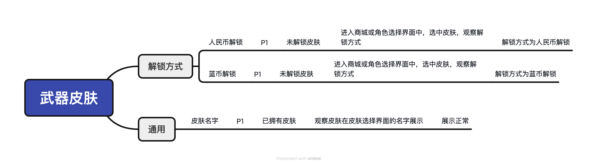

导入区
左列导入原始需求（支持 doc/docx/txt/md），右列导入多个 XMind 或文本用例。导入后的内容会同步到功能工作流中的对应区域。
请严格按照“需求（根节点） → 模块 → 用例标题 → 优先级 → 前置条件 → 操作步骤 → 预期结果”七层结构填写。少任一层都会影响字段解析。

[
{
"module": "解锁方式",
"title": "人民币解锁",
"priority": "P1",
"preconditions": "未解锁皮肤",
"steps": "进入商城或角色选择界面，选中皮肤，观察解锁方式",
"expected": "解锁方式为人民币解锁"
},
{
"module": "解锁方式",
"title": "蓝币解锁",
"priority": "P1",
"preconditions": "未解锁皮肤",
"steps": "进入商城或角色选择界面，选中皮肤，观察解锁方式",
"expected": "解锁方式为蓝币解锁"
},
{
"module": "通用",
"title": "皮肤名字展示",
"priority": "P1",
"preconditions": "已拥有皮肤",
"steps": "进入皮肤选择界面，观察皮肤在列表中的名称展示",
"expected": "皮肤名称展示正常"
}
]
同一根节点下可以继续添加其他模块与用例；若缺少根节点或其中某层，系统会降级为普通文本或字段缺失，建议严格遵循此结构，或直接上传拥有相同字段的 JSON/文本文件。
尚未执行
可输入对缺失项的补充说明（选填）。
点击选择或拖拽文件，解析后的原始需求文档会展示在右侧文本框，可手工修改后再进行清洗。
基于原始需求快速识别不明确项与潜在分支，便于评审时沟通澄清。仅在已导入需求后可执行。
模型用时：-- 秒
汇总所有评审中发现的不明确点，可逐条补充澄清结果并同步回评审 JSON。
执行清洗后，可复制或保存结果，方便进一步审查。
模型用时：-- 秒
列表展示清洗条目，可点击定位相关原始需求段落，快速核对清洗准确性。
使用指派的对比模型检查清洗结果是否覆盖原始需求。
模型用时：-- 秒
结果 JSON 字段：coverage=覆盖率，missing=未覆盖模块列表。
将清洗结果进一步拆分为具体测试模块，用于测试设计。请让模型输出 JSON 数组，字段：module、key_scenarios、test_points、coupled_modules。
模型用时：-- 秒
按模块查看拆分结构，便于核对场景与要点。
可导入单份或多份 XMind/JSON/txt 测试用例，解析后可在右侧查看并用于覆盖对比。
基于当前 XMind/文本内容渲染列表视图，可快速查看模块、用例标题、优先级等字段。
使用专用模型，对比“测试模块拆分”与“测试用例”之间的覆盖情况，识别缺失或冗余点。
模型用时：-- 秒
结果 JSON 字段：coverage=覆盖率，missing=缺失模块列表（结构与“测试模块拆分”一致），extra=用例中多余的点。
运行“测试用例覆盖对比”后，可在此查看缺失模块详情，并复制 missing 字段 JSON。
列表展示清洗条目，可点击定位相关原始需求段落，快速核对清洗准确性。
暂无清洗数据，请先完成需求清洗
原始需求全文将在下方展示，点击上方条目或选择文字后反向定位。
暂无原始需求，请先导入或填写
请选择模块查看用例
选择项目与版本后写入用例库；“旧用例追加入库”需额外选择目标用例。
导入 XMind/JSON/文本测试用例后，可在“执行视图”直接执行并记录实际结果；支持多份文件切换，执行数据会自动保存。
导入用例后需要点击“确认入库”，入库完成后才能进行下一步操作（如：执行分配 / 进入执行视图）。
未选择文件
在此页面进行执行分配：可按需求查看用例列表、创建版本分组、拖拽需求盒子进版本、拖拽用例到专注区；也可在执行视图进行执行人分配与结果录入。
需求用例组（可拖拽操作）
可从上方列表拖拽用例到此，移出专注不会影响用例原本的分组与顺序
同一列表展示导入与执行中差异：绿色表示新增，红色表示差异或将被覆盖/移除。
| # | 模块 | 用例标题 | 优先级 | 前提条件 | 操作步骤 | 预期结果 | 实际结果 | 备注 | 缺陷链接 |
|---|---|---|---|---|---|---|---|---|---|
暂无数据 | |||||||||
检测到导入文件内存在重复条目（按 模块+用例标题+预期结果 判重），数据库不支持重复条目，将在确认后自动去重。
| 行号 | 模块 | 用例标题 | 优先级 | 前提条件 | 操作步骤 | 预期结果 | 实际结果 | 备注 | 缺陷链接 | 处理 |
|---|---|---|---|---|---|---|---|---|---|---|
暂无数据 | ||||||||||
进入执行页或刷新执行页时会同步用例库增删改，此处展示最近一次变更差异；可通过“用例库变更”按钮重复查看。
| 类型 | 修改时间 | 操作人员 | 模块 | 用例标题 | 前提条件 | 操作步骤 | 预期结果 |
|---|---|---|---|---|---|---|---|
暂无变更 | |||||||
按文件汇总执行进度（当前导入与历史导入），颜色区分不同执行状态。
暂无用例执行数据
原则上归档前需全部执行通过；如仍有未通过/未执行用例，请填写归档原因后继续。
请选择项目/版本并搜索用例名，查看已归档用例列表。
| 编号 | 所属项目 | 版本 | 用例名 | 用例条目数 | 复用类型 | 导入人员 | 导入时间 | 归档人 | 归档时间 | 操作 |
|---|
拖拽或选择文件后，还需要选择项目与版本，点击确认才会入库。
同一列表展示导入与库中差异：绿色表示新增，红色表示差异或将被覆盖/移除。
| # | 模块 | 用例标题 | 优先级 | 前提条件 | 操作步骤 | 预期结果 |
|---|---|---|---|---|---|---|
暂无数据 | ||||||
以下用例存在必填字段为空（模块/用例标题/优先级/前提条件/操作步骤/预期结果），请点击单元格直接修改。
| 行号 | 模块 | 用例标题 | 优先级 | 前提条件 | 操作步骤 | 预期结果 |
|---|---|---|---|---|---|---|
暂无数据 | ||||||
| 所属项目 | 版本 | 用例名 | 执行页状态 | 用例条目数 | 复用类型 | 导入人员 | 导入时间 | 最近更新人员 | 更新时间 | 操作 | |
|---|---|---|---|---|---|---|---|---|---|---|---|
请选择项目后自动刷新。 | |||||||||||
检测到导入文件内存在重复条目（按 模块+用例标题+预期结果 判重），数据库不支持重复条目，将在确认后自动去重。
| 行号 | 模块 | 用例标题 | 优先级 | 前提条件 | 操作步骤 | 预期结果 | 备注 | 处理 |
|---|---|---|---|---|---|---|---|---|
暂无数据 | ||||||||
| 所属项目 | 版本 | 用例名 | 执行页状态 | 导入人员 | 导入时间 | 更新时间 | 操作 | |
|---|---|---|---|---|---|---|---|---|
请选择项目后自动刷新。 | ||||||||
选择项目与版本后查询，仅展示有历史改动记录的用例文件。
| 修改时间 | 用例名 | 版本 | 导入人员 | 导入时间 | 更新人员 | 更新时间 | 操作 |
|---|---|---|---|---|---|---|---|
请选择项目与版本后点击“查询”。 | |||||||
待删除用户：
| 操作时间 | 操作人员 | 操作页面 | 操作项 | 操作行为 |
|---|